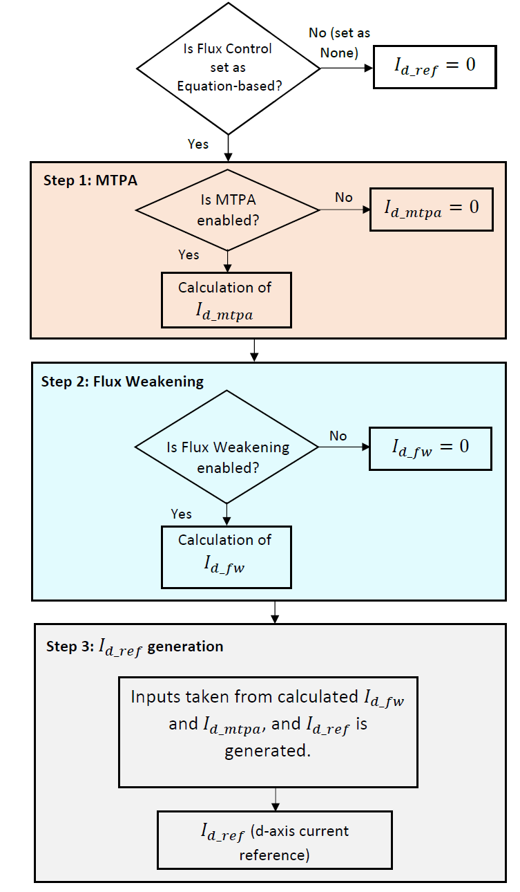

5.5. 磁链控制¶
5.5.4. 概述¶
MCAF 中的磁链控制模块负责为 PMSM 的 d 轴定子电流生成合适的参考值，该参考值随后作为 d 轴电流控制器的输入。注入 d 轴同步电流分量的需求可能来自以下所述的多种要求。
在 PMSM中，定子电压需要随转子速度增加而增大。然而逆变器的母线电压对定子电压构成了限制。不支持提高母线电压的其他重要考量包括用户安全和电机的安全工作区。许多应用要求电机在高于其额定值的速度下运行。为实现这一点同时限制定子电压，通过向电机注入负的 d 轴定子电流来削弱电机的气隙磁通。这种操作称为弱磁（FW）。无论凸极还是非凸极转子电机都需要弱磁。磁链控制中的 FW 模块在特定速度和负载下计算弱磁运行所需的合适 d 轴电流参考（\(I_{d\_fw}\)）。
磁链控制模块的第二个需求专门源于凸极转子电机。对于凸极电机，通过向电机注入负的 d 轴电流，可以使磁阻转矩（由电机的凸极性产生）协助永磁转矩。这确保电机以最大效率运行，即产生最大转矩/电流比（MTPA）。MTPA 算法为特定工作点计算 MTPA 运行所需的合适参考（\(I_{d\_mtpa}\)）。
5.5.5. 流程图与细节¶
磁链控制模块包含弱磁和 MTPA 的实现。根据需求，两种算法可以独立启用或禁用。弱磁模块计算并返回 d 轴电流参考 \(I_{d\_fw}\)，而 MTPA 模块计算并返回 d 轴电流参考 \(I_{d\_mtpa}\)。当禁用时，两种算法各自返回的 d 轴电流参考值均为零。 \(I_{d\_ref}\) 生成模块随后在 \(I_{d\_fw}\) 和 \(I_{d\_mtpa}\) 之间选择合适的值，并生成 d 轴电流参考 \(I_{d\_ref}\) 作为电流控制器的输入。 图 5.90 展示了整体磁链控制计算的流程图。
{kind=link}

图 5.90 磁链控制算法概述¶
根据需求，可通过将磁链控制设置为基于方程（Equation-based）来启用。如果将磁链控制设置为 None（无）来禁用，则 \(I_{d\_ref}\) 被置为零。启用后，MTPA 和 FW 算法中的任意一个或两个都可以被启用。
弱磁和 MTPA 模块分别计算 \(I_{d\_fw}\) 和 \(I_{d\_mtpa}\) 。如果这些模块被禁用，相应的计算值被置为零。
如果应用要求凸极电机在额定速度以上运行，则应同时启用 MTPA 和 FW。此时，根据运行区域，在两个模块计算出的 d 轴电流参考之间做出正确选择，并将该参考作为 d 轴电流控制器的输入。详见 d 轴电流参考生成 以获取更多细节。